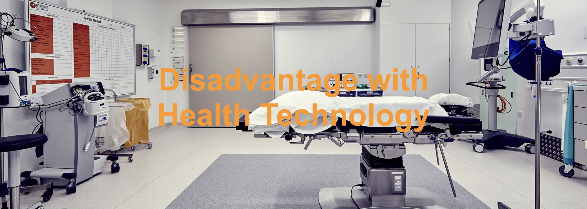

1. Cybersecurity breaches in health records that can compromise confidentiality and lead to identity fraud.
2. Risk of misdiagnosis given from machinery.
3. Lack of empathy when technology is interacting with a patient to when a doctor is.
4. A heavier reliance on the performance of technology in healthcare.
5. A difficult adaption to using new inventions for existing healthcare workers - 70% of the world already has difficulty with technology.
 Disadvantages
Beneficial Technology
About
Home
Disadvantages
Beneficial Technology
About
Home